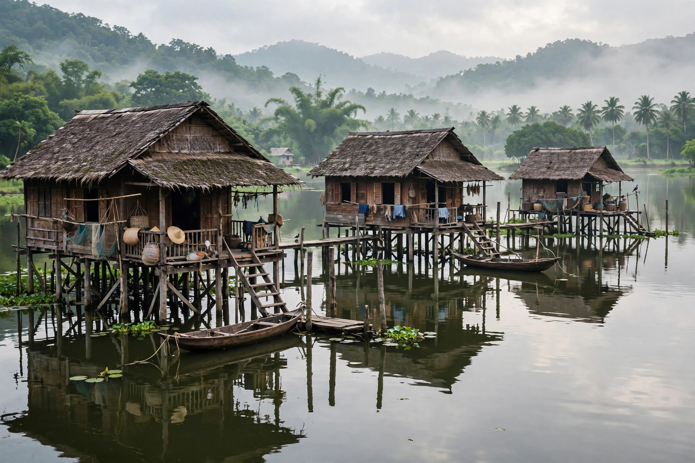

A stilt house (also called a pile dwelling or lake dwelling) is a house raised on stilts (or piles) above the surface of the soil or a body of water. Stilt houses are built primarily as protection against flooding, but they can also keep out vermin. The shady space under the house can be used for work or storage.

Pile dwellings have a long history. In the Neolithic and Bronze Age, stilt-house settlements were common in the Alpine regions of Europe; remains of these prehistoric pile dwellings around the Alps are now a UNESCO World Heritage listing. Herodotus described pile dwellings on Lake Prasias in ancient Thrace, and pile villages have been identified at sites such as the Ljubljana Marshes in Slovenia.
Stilt houses are widespread in Southeast Asia, where they include the Malay and Thai traditional houses, the bahay kubo of the Philippines raised on posts, and the longhouses of Borneo. In Oceania they occur in Papua New Guinea and the Pacific islands. In the Americas, palafitos are found in Venezuela — the name "Venezuela" itself is traditionally linked to the stilt villages seen by early European explorers — and in parts of the Caribbean and the southern United States, where shrimpers' and fishing camps raised houses above marshland. In Europe, the granaries of Norway (stabbur) and the hórreos of northern Spain are raised on pillars to protect stored food from moisture and rodents.
Raising a dwelling on piles lifts it above floodwater and damp ground, improves ventilation in hot and humid climates, discourages pests and wild animals, and on sloping or unstable ground avoids the need to level a building platform. Along coasts and lake shores the space beneath the house may shelter boats and fishing gear.